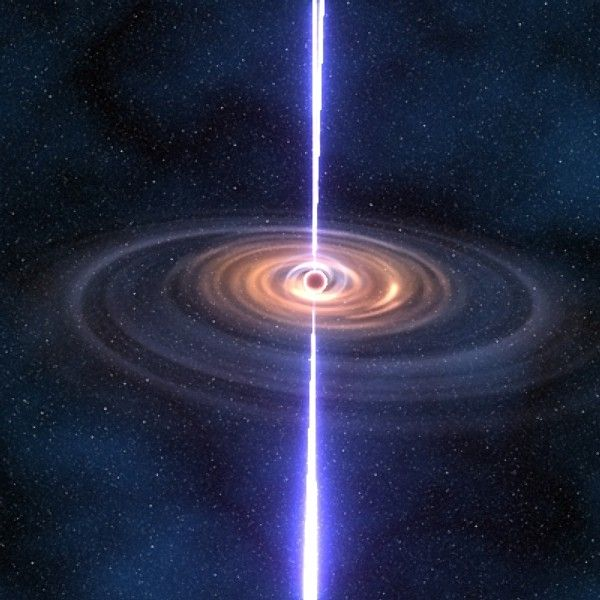

- Stars Home
- Star Life Cycle
- Star Death
Star Death
Low Mass Stars
Planetary Nebula
This phase is a final stage in a low-mass star's life. During this phase, the star sheds its outer layers. This creates an expanding, glowing shell of very hot gas. Despite the name, they have nothing to do with planets. They got this name because astronomers using small telescopes long ago thought they looked a bit like planets. Low-mass stars turn into planetary nebulae towards the end of their red giant phase. At that point the star becomes highly unstable and starts to pulsate. This produces strong stellar winds which throw off the outer layers of the star. The outer layers drift away from the star leaving a small hot, bright core behind, called a white dwarf. The white dwarf gives off ultraviolet radiation which lights up the layers of gas around the star.
High Mass Stars
Supernova
Supernovae are huge explosions in space. They take place during the final stages of some stars' lives. When they erupt, one supernova can briefly shine brighter than a whole galaxy. There are different types of supernovae. Type Ia are thermonuclear explosions. The most well known are core-collapse supernovae. These take place when a star at least 8 times the mass of the Sun, runs out of fuel. When a massive star reaches the final stages of its evolution, its core is made mostly of iron. The star cannot fuse elements heavier than iron. This means fusion stops. At this point, there is no outward pressure to balance the inward pull of its gravity. Gravity pulls all the material in the star towards its middle. This starts a sudden, rapid collapse of the star.
Pulsar
A pulsar is a dense, rotating object which gives off a beam of radiation from each of its magnetic poles. They come from neutron stars - the leftovers of a supernova. These recently exploded, massive stars, spin very fast and have a very strong magnetic field. Pulsars emit beams of radio waves and other radiation. We can only detect them if the beam points towards Earth, so there may be more pulsars that we cannot observe. As the neutron star spins, the beams sweep past the Earth at regular intervals, or in pulses, hence the name. It's a bit like seeing the flashes of light from a lighthouse.
Black Hole
Black holes are very strange objects. They are made during supernova explosions. These take place when very massive stars come to the end of their lives. After the supernova, anything left of the star is squashed and compacted into an incredibly small, dense object. This is the black hole. Once a black hole has formed, it grows by pulling in gas, dust, stars, and even other black holes around it. Over time, supermassive black holes can develop. We think that most large galaxies have a supermassive black hole in their center.